Theaters in East Village
La MaMa Experimental Theatre Club is dedicated to the artist and all aspects of the theatre. Founded in 1961 by Ellen Stewart, La MaMa is recognized as the seedbed of new work by artists of all nations and cultures.
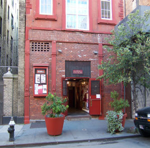Founded in 1979, New York Theatre Workshop provokes, produces and cultivates the work of artists whose visions inspire and challenge all of us. providing a home to artists to hone their creative voice and a platform to produce their work.
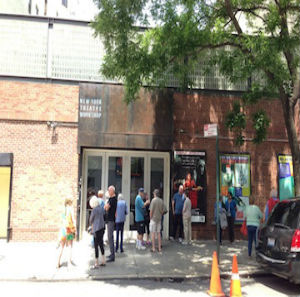There are many Orpheum Theaters across the United States, Canada and elsewhere, some with Broadway tours like Wicked and Motown. In New York the resident show STOMP is one of New York's unique entertainment experiences.
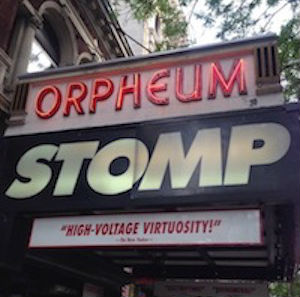The Upright Citizens Brigade (Matt Besser, Amy Poehler, Ian Roberts, and Matt Walsh) came to New York, from Chicago, in 1996. Since that moment UCBT quickly became the place for great, cutting-edge, comedy.
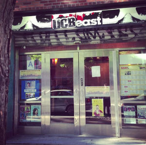THEATER FOR THE NEW CITY was founded in 1970 by Crystal Field and is unique cultural institution that nurtures established and emerging playwrights and presents experimental and developmental theater.
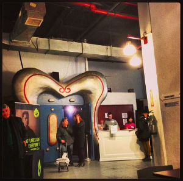Beginning in 1993 Metropolitan has presented over 50 full length productions and twice as many one acts and work shops. The company turned to American plays in 1997 and each season around a theme.
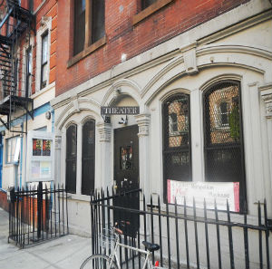WOW began in 1980 as an international women’s theatre festival. Any woman and/or transgender person is welcome to get involved in any aspect of making theatre. No prior experience is required!
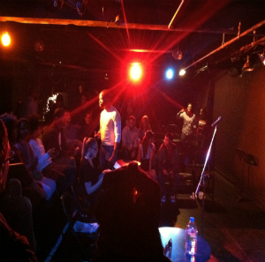St. Marks has been an experimental theatre space since the 1970's. Located on St. Marks Place between First Avenue and Avenue A, this basement theatre is popular with a wide variety of theatre artists.
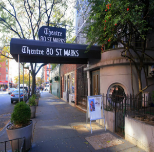The Kraine Theatre is one of the most well known downtown venues featuring Off and Off-Off Broadway productions year round.You can bring drinks into the theater if they're in bottles or plastic cups.
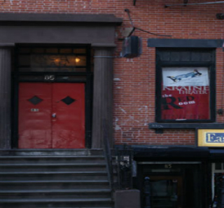Connelly is a beautiful miniature opera house in the heart of NYC's East Village that serves as a home for adventurous independent theater productions. The Theater is part of Cornelia Connelly Center, a non-profit that champions girls at risk. All proceeds from theater rental go to the Center to support their middle school and Graduate Support program.
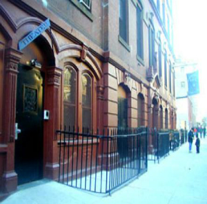Founded in 2007, the wild project is an innovator among arts venues, providing an eco-friendly theater and gallery where the artists and space nurture each other. The wild project is a theater, film, music, and visual arts venue that presents diverse, engaging, inspiring, and entertaining works to the vibrant and growing community of Alphabet City in New York’s East Village.
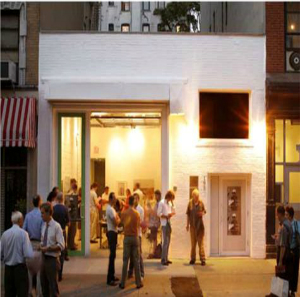